×

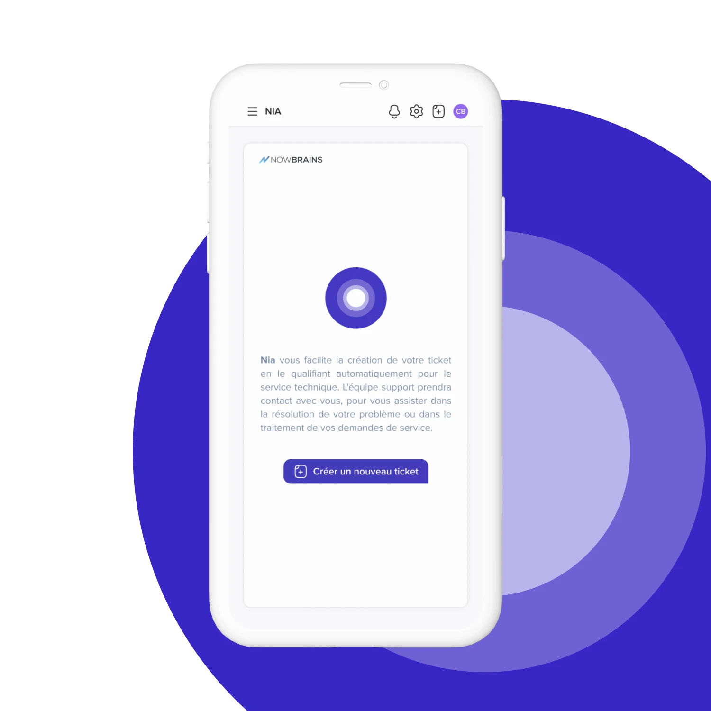
◼ A redesign of an AI-powered IT support platform
◼ 2025
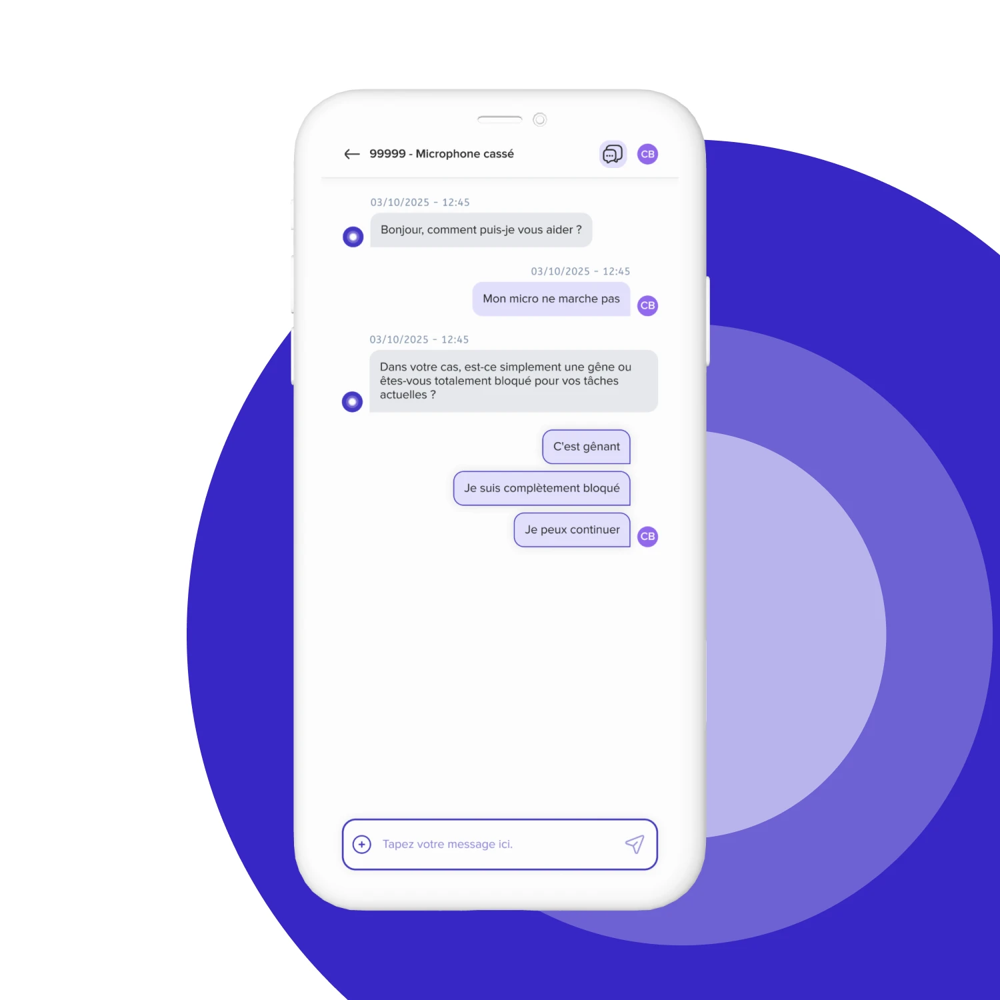
The main goal was to raise the rate at which users resolve their issues through the AI chatbot instead of escalating to a human technician. This meant redesigning the platform for more clarity and concision, while staying loosely aligned with the existing visual identity.
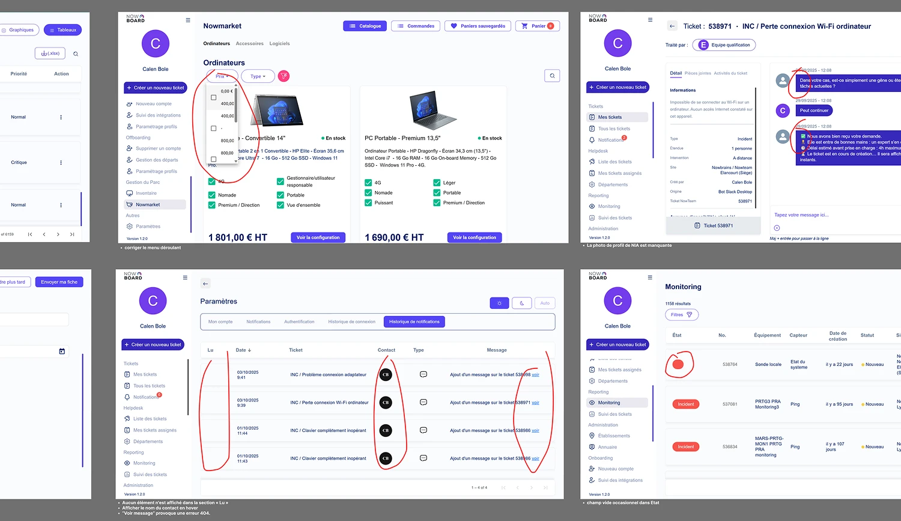
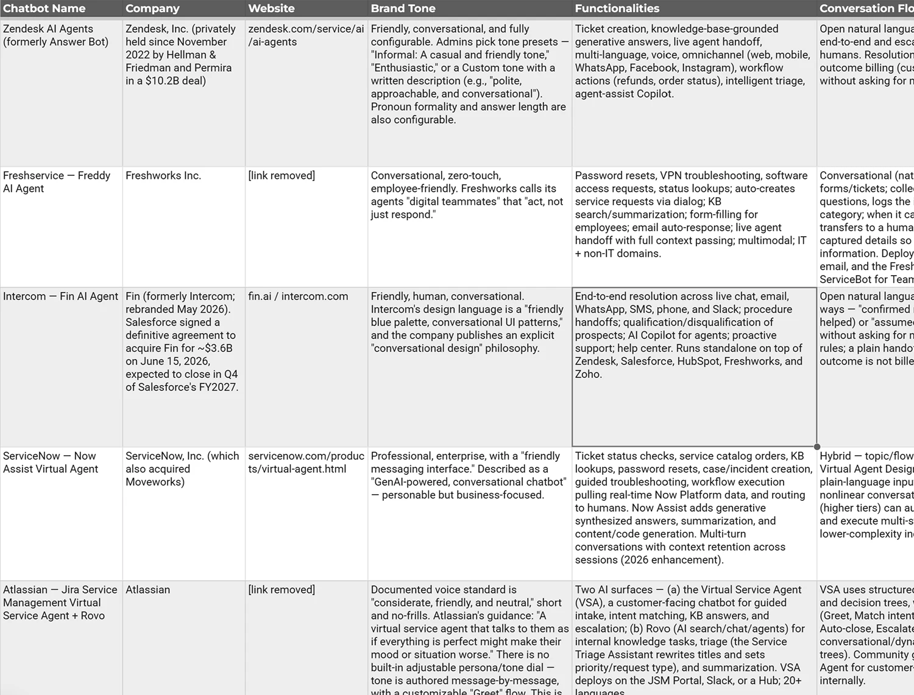
I spoke with the different people involved in the product, from end users to the human IT technicians who handle escalated issues. I benchmarked other IT chatbot services, looking at UX, conversation tone, and chatbot functionality. I also ran a full design audit of the existing Nowboard platform. This research revealed that the current chatbot was too weighted towards imitating actual conversation. Given that our users were typically using this service in a professional context in the midst of an IT crisis, they wanted more direct, actionable steps towards solving their problem, and less friendly chatter.
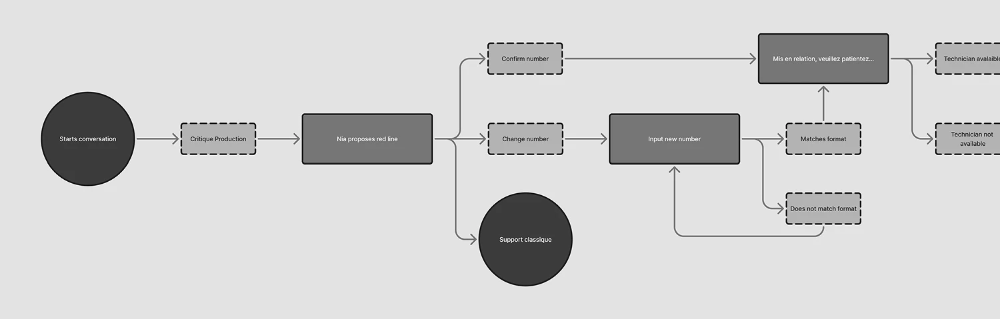
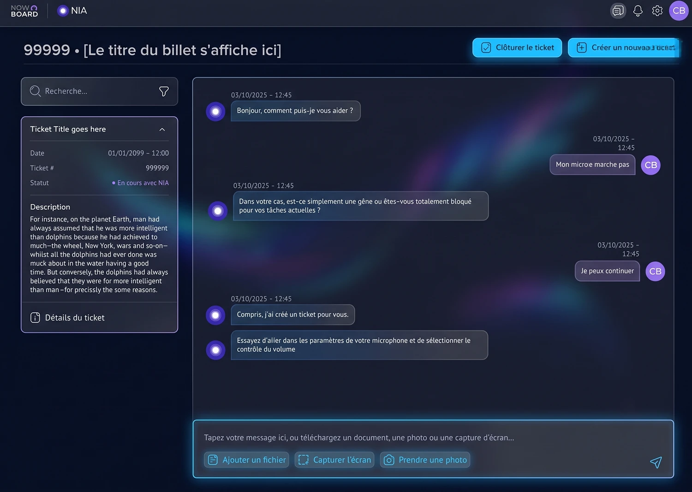
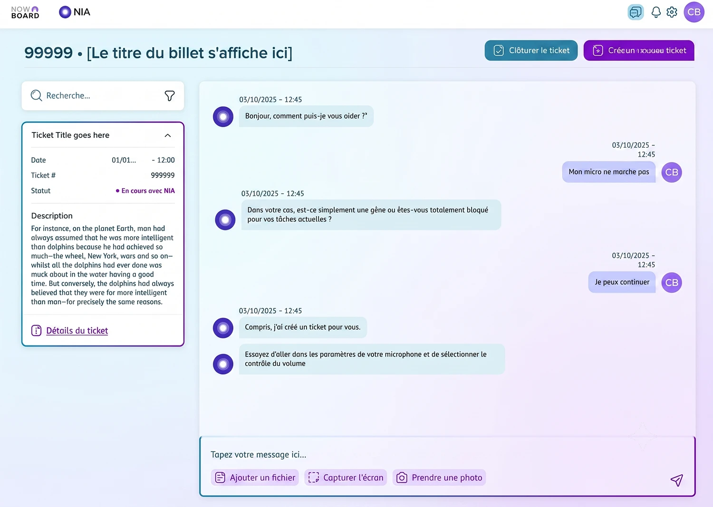
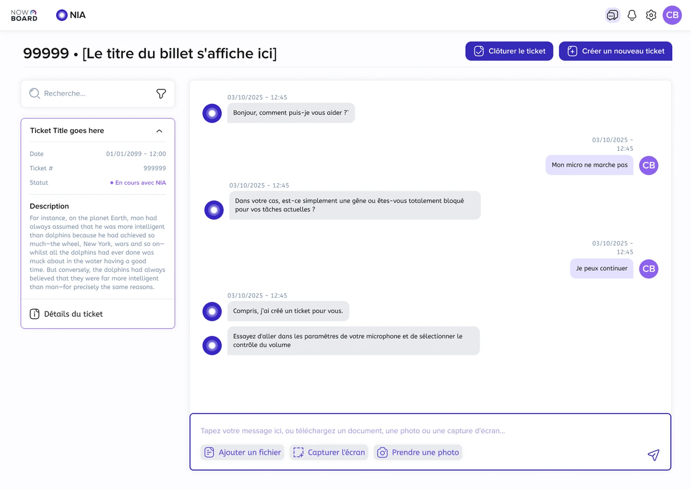
I worked closely with the dev team to define what improvements were realistic to build and integrate. Together we mapped out the conversation and design flows for the new version. I then used AI tools to iterate on the final aesthetic of the platform.
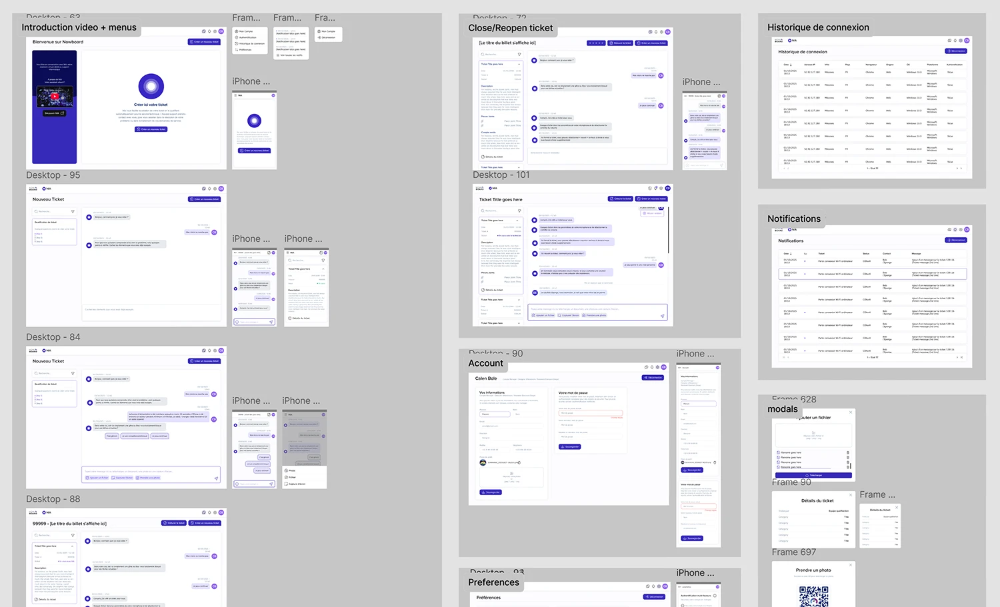
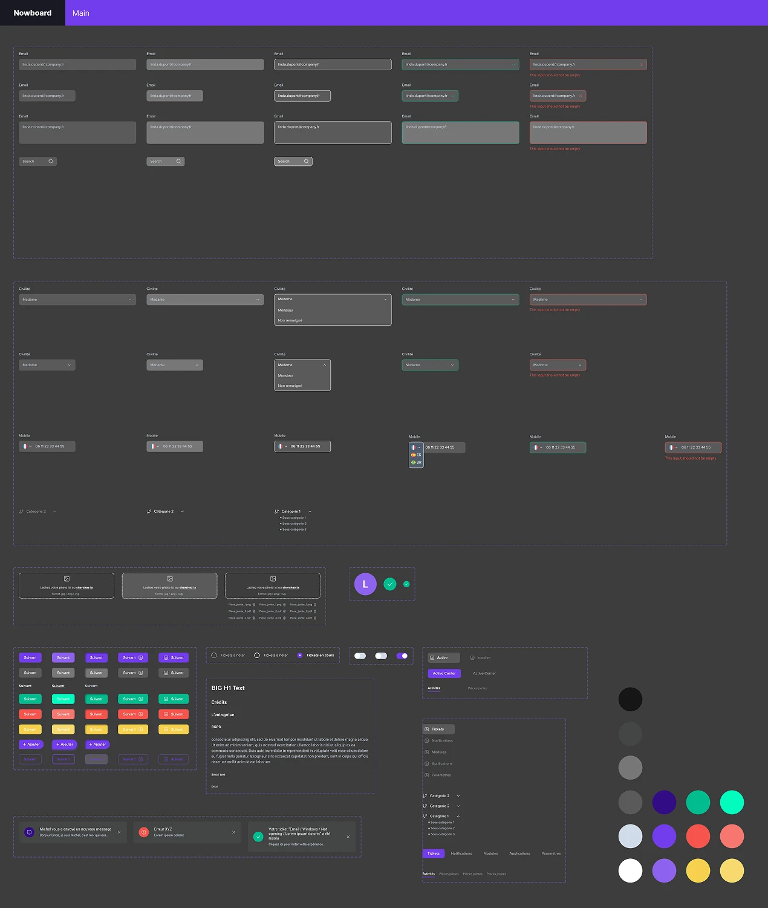
I built a new, more contemporary design system for the Nowboard. Using Figma’s AI tools, I redesigned the entire dashboard experience around this new system, complete with a spec for developers and AI agents.
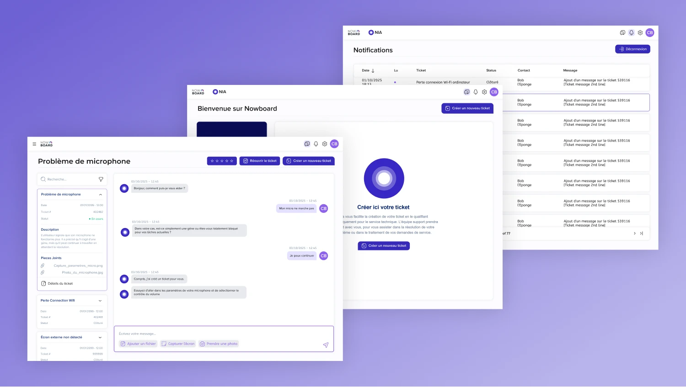
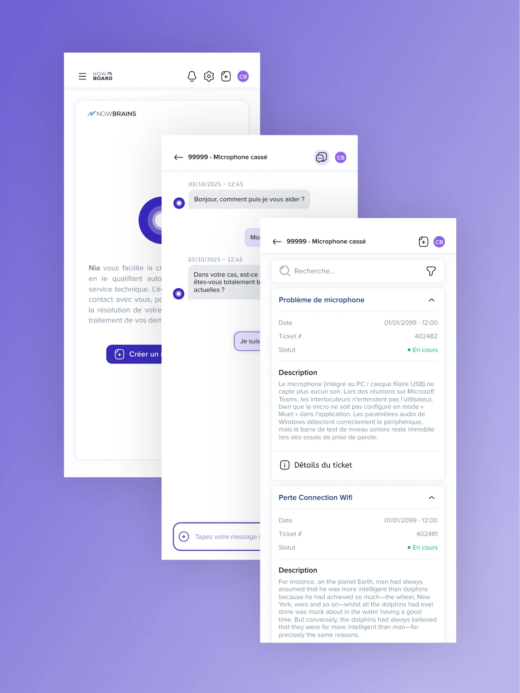
The result was a fully refurbished IT dashboard with a new UX and CX. In early testing, the redesign more than doubled the AI-assisted resolution rate.
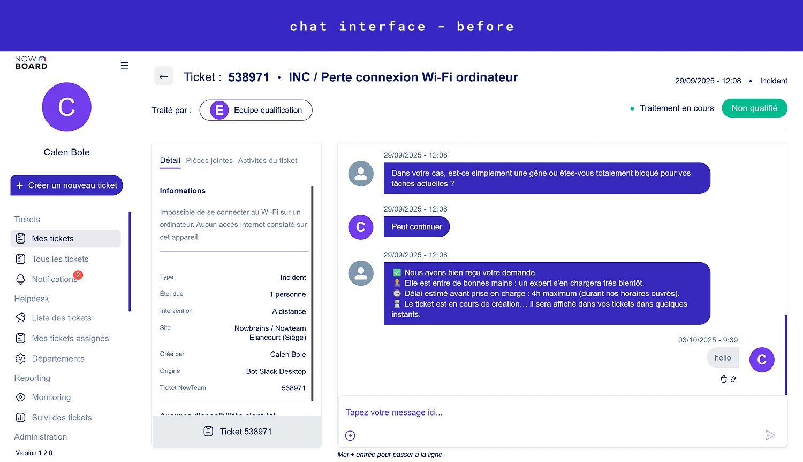
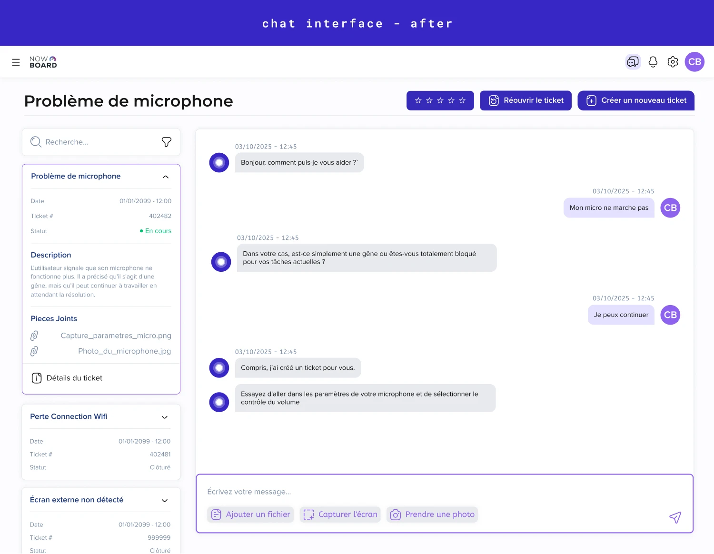